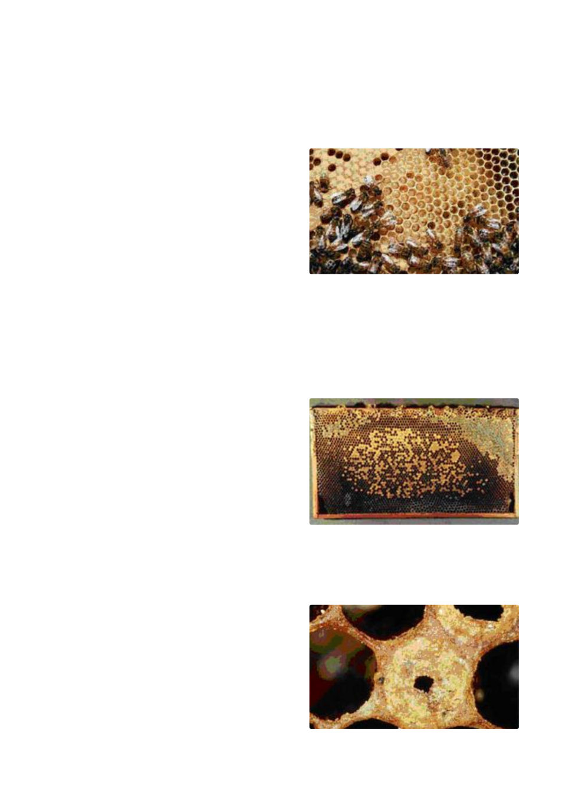

Supplementary feeding by use of sugar syrup (see June “In the Hive”); shifting the hive to a location where
adequate nectar flow is available, or taking a “spare” frame of honey from one hive and transferring it to one
that is in need of food, are all viable options. If the latter process is used, extreme care must be taken to
ensure you are not transferring disease from one hive to another!
The Queen and Brood
It is essential to check as early as possible in spring that
the hive has a fertile and vigorous queen. This can be
assessed by observing the laying pattern established. If
there is a uniform pattern of eggs, larvae and sealed
brood, the queen is performing up to expectation and
should be retained. There is no need to actually sight the
queen.
If eggs appear to be on the side, rather than in the middle
at the bottom of a cell, this indicates an old / failing
queen. Similarly, if there are an abnormal number of drone cells evident (raised bullet shaped capping) the
queen is losing her fertility and the hive should be united with another. It is not often that there will be
sufficient brood to enable the colony to survive if the queen is a drone layer, even if a new young queen is in-
troduced.
If the brood laying is scattered (as at right), this may be an indication of an aging / failing queen, or the
presence of disease.
Presence of diseases
It is vital to check for any signs of disease early in spring.
A very slow or negligible build up in brood numbers at this
time may be an indicator of the presence of AFB or
Nosema. Both of these may result in the complete loss of
a hive.
a) AFB. - A virulent, destructive and notifiable disease.
Although difficult to detect in the early stages, detection
off this disease is important to prevent its spread to other hives which will also succumb to the disease! It
may be found in both weak and strong hives!!
Symptoms of AFB in the Brood.
AFB diseased larvae and pupae always lie stretched
out on their backs on the lower wall of their cells,
from the back of the cell (the mid-rib of the comb) to
the cell opening. If the cell is likened to a clock-face,
the diseased larvae / pupae will be positioned at the
bottom of the face between the figures 5 and 7.
The caps of cells containing diseased larvae or pupae
may be sunken, concave, dark and at times greasy-
•
•
Geelong Beekeepers Club ∙ General Beekeeping
25